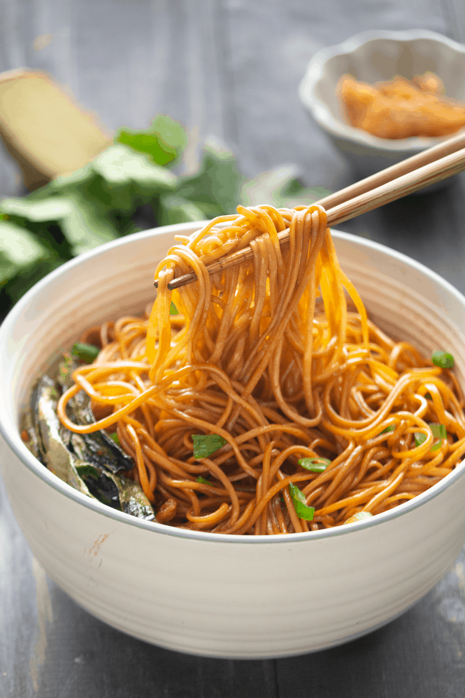

Scallion Oil Noodles

Ingredients
- 200g boneless chicken
- 1/4 teaspoon pepper powder
- 1/8 teaspoon salt
- 1 teaspoon soy sauce
- 1/2 teaspoon garam masala powder
- 150g noodles
- 1/4 cup cabbage
- 1/4 cup green capsicum
- 1/4 cup carrots
Recipe
- Marinate chicken with pepper, salt, soy sauce and garam masala powder
- Bring 2 1/2 litres of water to boil in a large pot
- Add the noodles to the boiling water and cook for at least 5 minutes
- Wash all vegetables and finely slice them into strips. Stir fry the vegetables on high heat for two minutes, stirring constantly. Remove from the wok
- Add the chicken to the pan and cook on high heat until chicken is thoroughly cooked.
- Combine the noodles and vegetables with the cooked chicken and serve while hot.